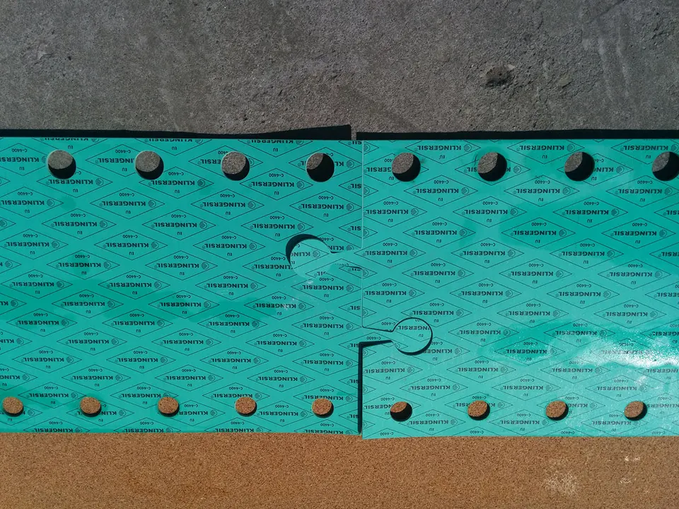
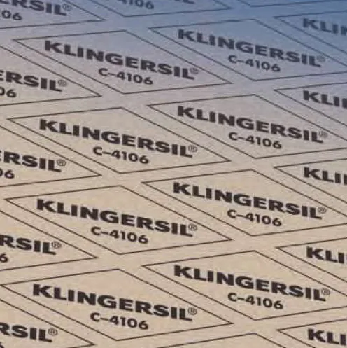

Krusz-Tech / Materiały / Płyty uszczelkarskie
Płyty uszczelkarskie Klinger, Gambit i Polonit
Uszczelki płaskie wycinane z płyt renomowanych producentów, dobrane do medium, temperatury i ciśnienia. Na rysunek, według normy albo na wzór zużytej uszczelki.

Płyty uszczelkarskie Klinger, Gambit i Polonit mają szeroki zakres zastosowań, od wody i pary po oleje, paliwa i media agresywne. Z każdej z nich wycinamy uszczelki płaskie na rysunek klienta albo według norm EN 1514-1, EN 1092 i ASME B16.5.

Klinger
Producent płyt nowej generacji do różnych zastosowań technicznych. W ofercie są płyty:
- o szerokim zastosowaniu przy niskich, średnich i wyższych parametrach pracy,
- do pary wodnej,
- do aplikacji olejowych,
- do agresywnych kwasów i zasad,
- z ekspandowanego PTFE.
Płyty Klinger są dostępne w różnych rozmiarach, grubościach i odmianach i dobrze znoszą wysokie ciśnienie oraz temperaturę przy pracy ciągłej.

Gambit
Bezazbestowe materiały do uszczelnień technicznych. Płyta to kompozyt z włókien aramidowych, starannie dobranych włókien i wypełniaczy nieorganicznych oraz elastomerów właściwych dla warunków pracy.
Parametry płyt Gambit spełniają wymagania większości zastosowań: szeroki zakres ciśnień i temperatur oraz kontakt z wieloma mediami technicznymi.

Polonit
Płyty do prac w szerokim zakresie ciśnień i temperatur. Można je stosować w kontakcie z zimną i gorącą wodą, parą wodną, olejami, paliwami, alkoholami, a także słabymi kwasami, zasadami i rozpuszczalnikami.
Jak zamówić uszczelki z płyty
Wystarczy rysunek, wymiar kołnierza albo zużyta uszczelka do odwzorowania. Przed wycięciem sprawdzamy:
- medium robocze,
- temperaturę pracy,
- ciśnienie w układzie,
- standard kołnierza i wymagany wymiar.
Wykonujemy pojedyncze sztuki do wymiany i serie na potrzeby utrzymania ruchu oraz produkcji.